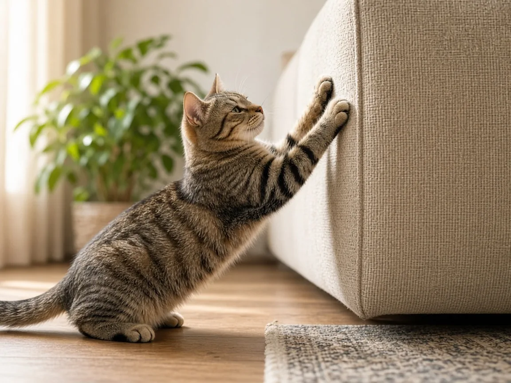
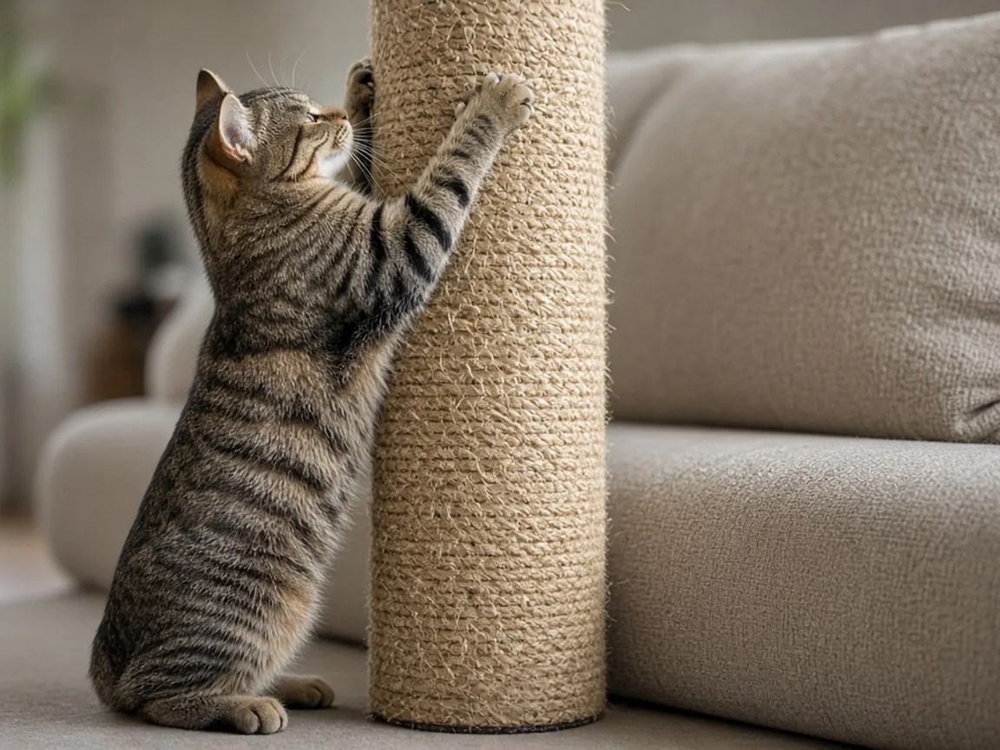

Why do cats scratch furniture?
Cats scratch furniture because scratching is a natural way to mark places, maintain their claws, and stretch. The most effective response is to provide appealing scratching surfaces where your cat already wants to scratch.

Scratching is normal, not revenge
A cat clawing a sofa can look surprisingly purposeful, especially when the animal returns to the same corner. But the behavior is not evidence of spite. Cornell Feline Health Center explains that scratching is an instinctive marking activity that leaves both visible marks and scent from glands in the paws. It also helps remove the outer sheath of the claws.
The furniture is attractive partly because it is prominent, stable, and textured. A cat may choose a sofa arm because it supports a satisfying full-body stretch, not because it knows the sofa was expensive. Treating scratching as a normal need changes the practical question from "How do I stop my cat from scratching?" to "Where can my cat scratch instead?"
Why cats choose particular surfaces
Cats differ in what they enjoy scratching. Some prefer vertical surfaces that let them reach upward. Others work on horizontal cardboard or carpet-like materials. Texture matters: rough rope, cardboard, fabric, and wood feel different under the claws. Cornell recommends observing both the orientation and material your cat chooses before buying a substitute.
Location is equally important. VCA Animal Hospitals notes that scratching helps cats mark territory, so a post hidden in an unused corner may be ignored. Put a suitable scratching surface near the furniture already being scratched, ideally where the cat spends time. The goal is not to force an unfamiliar habit in an inconvenient place; it is to offer an acceptable version of the habit the cat already has.

How to make a scratching post appealing
Choose a sturdy post that does not wobble when the cat leans into it. For a vertical scratcher, make sure the cat can stretch comfortably. For a cat that attacks rugs, try a flat cardboard pad or other stable horizontal surface. Providing more than one type can help when preferences are uncertain.
Reward the behavior you want to see. When your cat approaches or uses the new surface, offer praise, play, or a suitable treat. You can also position toys nearby. VCA recommends placing a post beside the previously scratched furniture and moving it gradually once the cat reliably uses it. Avoid forcing the cat's paws against the post; a frightening interaction can make the object less appealing.
Protecting the sofa while habits change
During retraining, protect the old target. A washable cover or a furniture-safe temporary barrier can make the surface less inviting. Check any adhesive product on an inconspicuous area before use and make sure the cat cannot ingest loose material. Restricting access to a room may help temporarily, but the cat still needs appropriate scratching options elsewhere.
Regular claw trimming can reduce damage without eliminating the urge to scratch. Ask a veterinarian or veterinary nurse to demonstrate if you are unsure how to avoid the sensitive quick. Cornell also discusses nail caps for cats that tolerate handling. Declawing is not a routine solution: it involves removing the ends of the toes, rather than simply trimming nails.
When scratching suggests stress or a health concern
A sudden change in where or how intensely a cat scratches deserves attention. VCA notes that household changes and anxiety may contribute to territorial marking. New animals, altered routines, or conflicts over shared space can change behavior. Look for other changes in appetite, social behavior, litter-box use, or activity rather than assuming the furniture is the entire problem.
If scratching becomes unusually persistent, accompanies other signs of distress, or fails to improve with appropriate surfaces and positive reinforcement, speak with your veterinarian. The aim is to understand the underlying cause, not punish the animal. Yelling and spraying water can make a cat fearful and do not teach it where to scratch safely.
A simple plan for the next few days
Start by watching rather than interrupting. Note where your cat scratches, whether it reaches upward or works along the floor, and what texture seems most appealing. Put an appropriately sturdy scratcher beside that spot. Make it rewarding with a favorite toy or a small treat when the cat uses it. Protect the furniture while the new habit develops.
If the cat returns to the sofa, calmly redirect attention to the scratcher without frightening or grabbing the animal. Some cats accept a new surface quickly; others need repeated opportunities. Keep the setup consistent and do not remove a heavily used scratcher simply because it looks worn. A familiar, marked object may be exactly what the cat prefers.
Cat scratching FAQ
Should I punish my cat for scratching?
No. Punishment can cause fear and does not teach the cat which surface to use. Reward appropriate scratching instead.
What if my cat ignores a scratching post?
Try a different texture or orientation and place it next to the preferred scratching site.
Will nail trimming stop scratching?
No. Trimming can reduce damage but does not remove the normal urge to mark and stretch.
When should I call a vet?
Ask for advice if scratching changes abruptly, seems linked to distress, or accompanies other changes in behavior.
Sources
Cite this page
Students and teachers are welcome to cite this page. Add your access date if your teacher or style guide asks for one.
APA (7th ed.)
MeowWise. (2026, November 9). Why do cats scratch furniture? https://meowwise.com/blog/why-do-cats-scratch-furniture.html
MLA (9th ed.)
“Why do cats scratch furniture?” MeowWise, 9 Nov. 2026, meowwise.com/blog/why-do-cats-scratch-furniture.html.
Chicago (bibliography)
MeowWise. “Why do cats scratch furniture?” Last modified November 9, 2026. https://meowwise.com/blog/why-do-cats-scratch-furniture.html.
General education, not veterinary advice. If you are worried about your cat, contact your veterinarian; in an emergency, go to the nearest emergency vet.